画像からLINEスタンプを切り出して、ZIP形式で申請準備まで一括完結。すべての機能を画面つきで解説します。
← はじめての方はまず「クイックマニュアル」へAI翻訳機能（英語タイトル・説明文の自動生成）を使うための設定
申請には英語のタイトル・説明文も必要ですが、「英語に翻訳」ボタンでAIに自動生成させることができます。この機能を使うにはGemini APIキー（無料）の登録が必要です。APIキーはこの端末のブラウザ内にのみ保存され、外部サーバーには一切送信されません。この設定は必須ではなく、翻訳を自分で入力する場合は不要です。
ヘッダー右上のボタンを押すと設定ダイアログが開きます。
aistudio.google.com にアクセスし、「APIキーを作成」をクリックします。Googleアカウントでのログインが必要です。
コピーしたキーを入力欄に貼り付けて保存します。
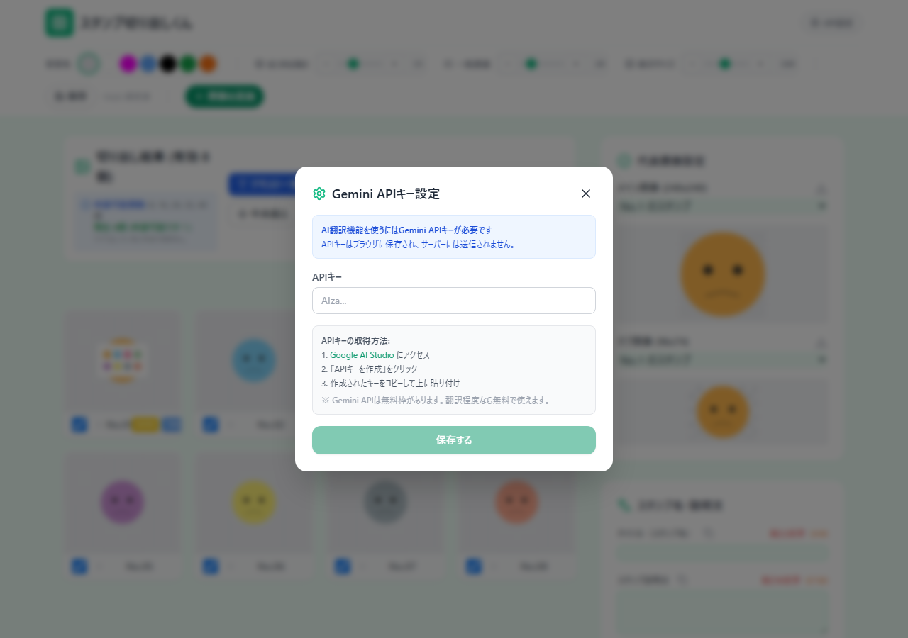
Gemini APIは無料枠があります。翻訳程度の用途であれば、無料の範囲内で十分利用できます。
APIキーは絶対に他人やAIに教えないでください。APIキーが漏れると第三者に不正利用される恐れがあります。チャットや画面共有中に入力・表示しないようご注意ください。
スタンプ素材となる画像を読み込む方法
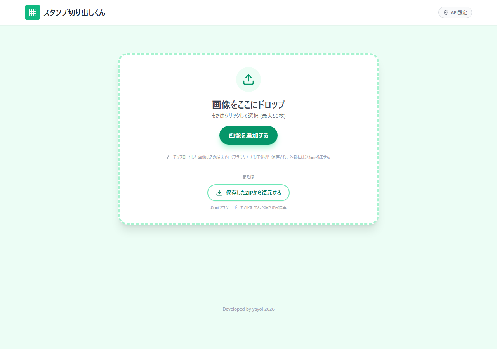
画像エリアにドラッグ&ドロップするか、クリックしてファイル選択。PNG・JPEG対応。最大50枚まで同時にアップロード可能です。
以前ダウンロードしたZIPファイルを選択すると、前回の編集状態から再開できます。
ただし元のスタンプ画像（切り出す前の元画像）は保存されません。復元後に「再切り出し」をクリックしても元画像は表示されないため、再切り出ししたい場合はもう一度元画像をアップロードしてください。
編集内容は随時ブラウザ内に自動保存されます。次回サイトを開くと「保存データが見つかりました」→「続きから再開する」で作業を再開できます。作業途中でZIPをダウンロードしておくとさらに安心です。
AI生成画像に格子状のグリッド線が入っている場合、「グリッド線を除去する」ボタンで自動除去してから切り出すと綺麗に仕上がります（グリッド線が検出された時のみ表示されます）。
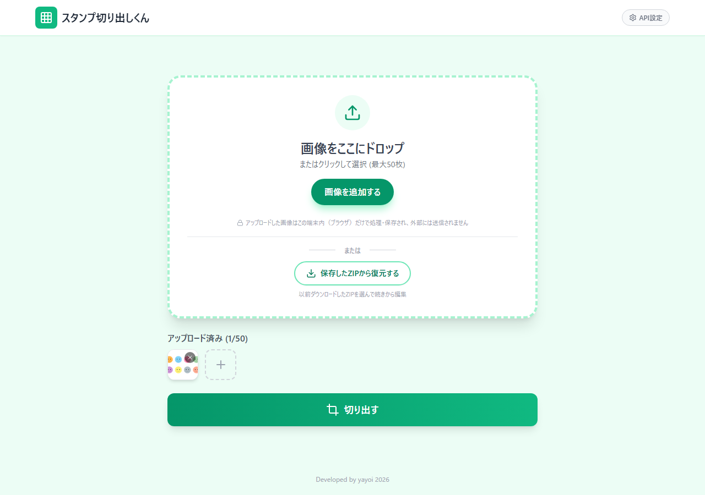
自動切り出しの結果と、範囲をやり直したいときの操作
「切り出す」を押すと画像内のキャラクター・パーツを自動検出し、1つずつのスタンプとして切り出します（背景も自動透過）。結果はメインの編集画面に一覧表示されます。
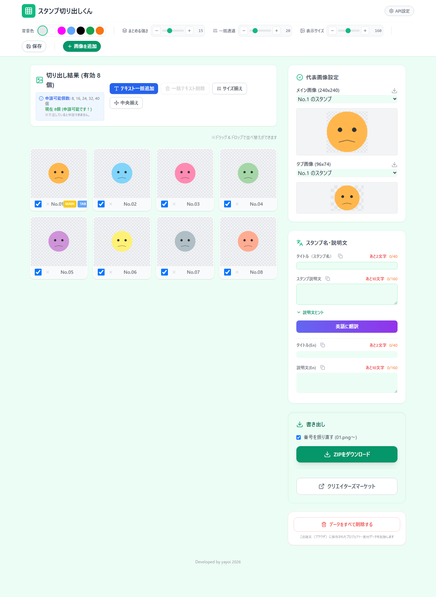
申請可能個数を確認：LINE申請は8・16・24・32・40個のいずれかである必要があります。現在の個数と「次は◯個を目指しましょう」という案内が画面左上に表示されます。
新しい画像をアップロードするか、アップロード済みの画像から選びます。
自動は自動検出におまかせ、手動は自分でドラッグして範囲を指定できます。
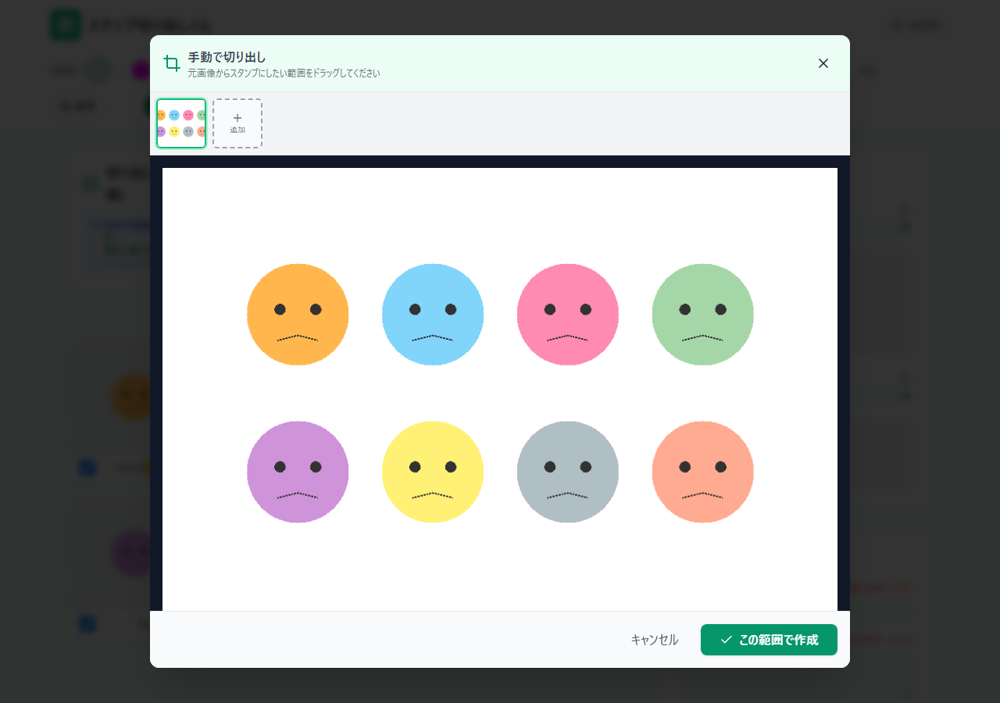
すでにあるスタンプの切り出し位置をやり直したい場合は、スタンプにカーソルを乗せて表示される「再切り出し」（はさみアイコン）から、同じ手動切り出し画面を開けます。
スタンプをクリックすると開く編集画面。下部ツールバーの8つのツールを解説
一覧のスタンプをクリックすると編集モーダルが開きます。上部で表示倍率・元に戻す/やり直す・背景色（プレビュー用）が、下部のツールバーで編集モードを切り替えられます。
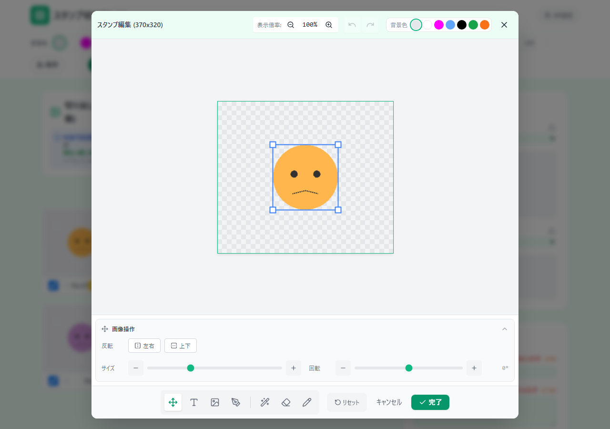
キャンバス上でドラッグして画像位置を移動できます。下のパネルでは左右反転・上下反転・サイズ・回転を調整可能。「リセット」で元の状態に戻せます。
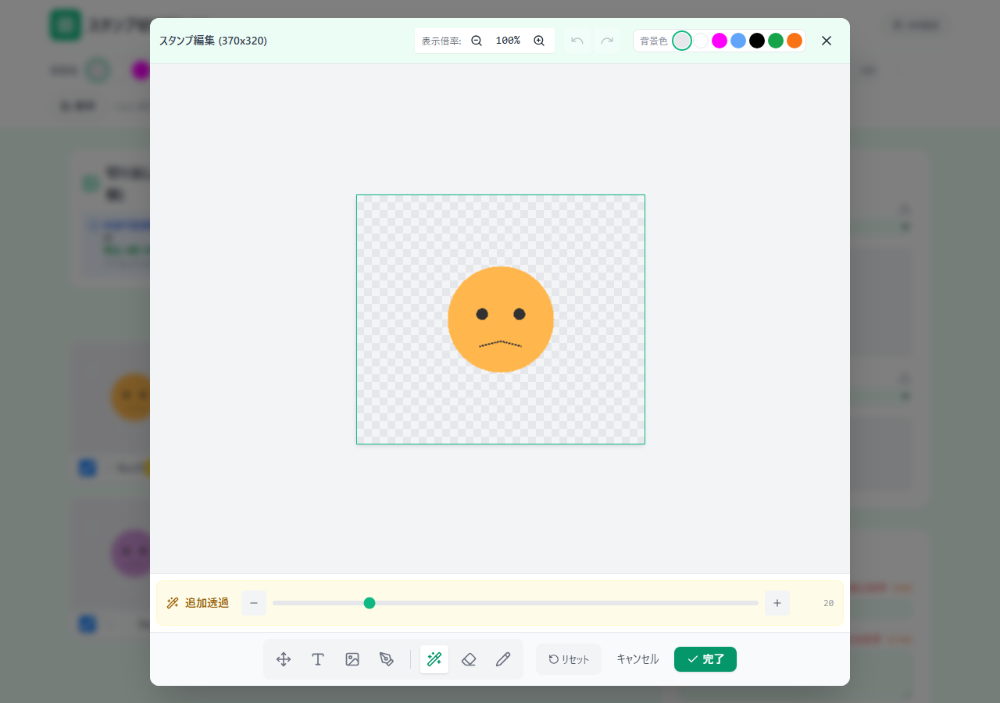
指定した部分をクリックして透明にします。背景の消し残しをピンポイントで直したいときに使います。透過の強さ（許容範囲）はスライダーで調整できます。
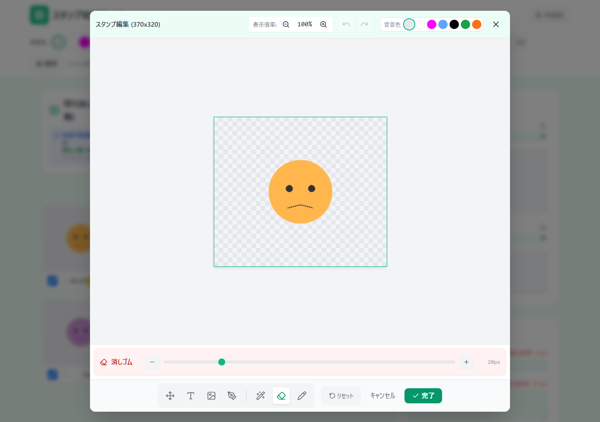
なぞった部分を透明（消去）にします。追加透過が「似た色をまとめて消す」のに対し、消しゴムは「なぞった場所だけ」を消す自由な編集ツールです。
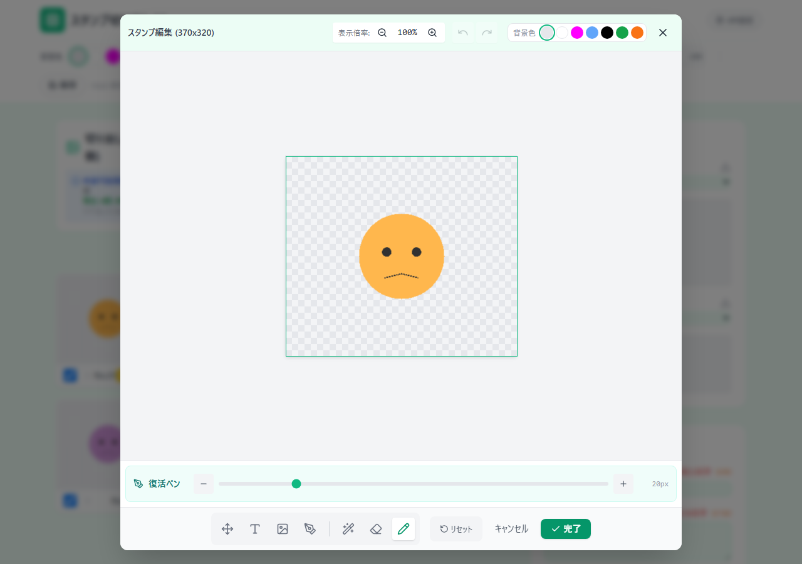
消しすぎた・透過しすぎた部分を元の画像に戻すペンです。追加透過や消しゴムで消えすぎた時のやり直しに使います（切り出し直後の元画像がある場合のみ使用可）。
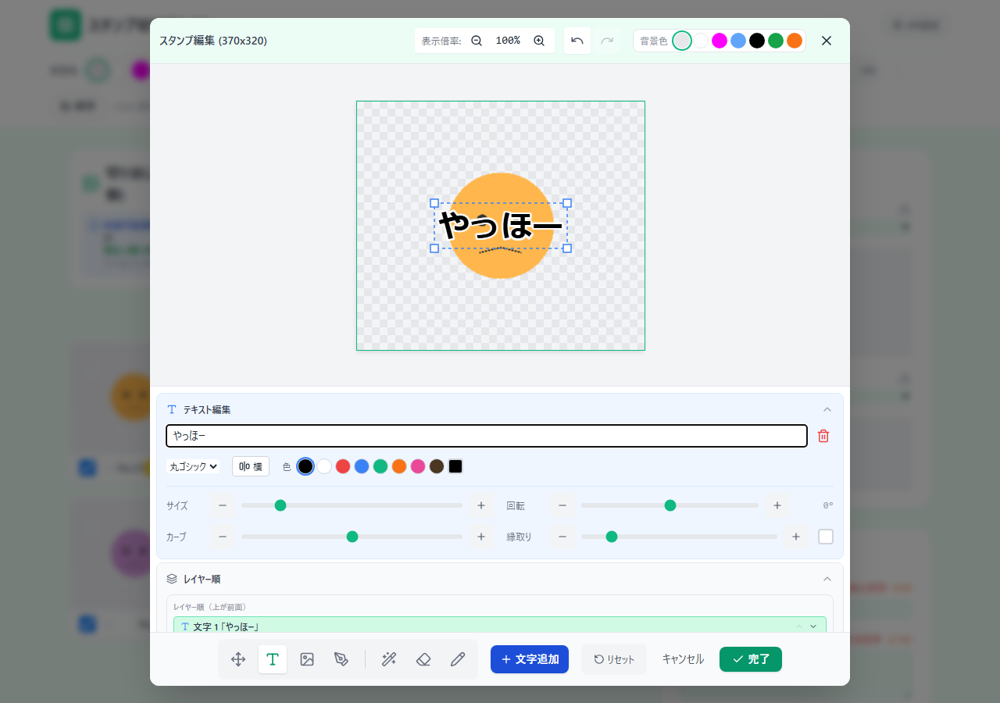
「文字追加」でスタンプにテキストを追加します（最大3つまで）。フォント（丸ゴシック／ゴシック／明朝）、縦書き・横書き、色（8色＋カラーピッカー）、サイズ・回転・カーブ・縁取りの太さと色を細かく調整できます。
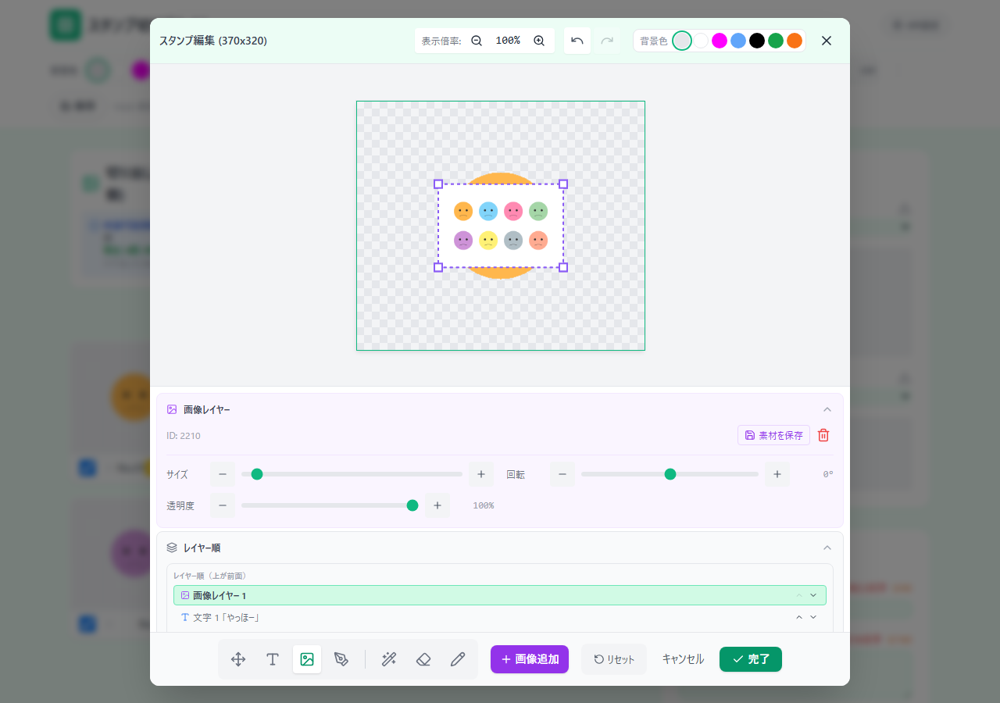
別の画像をスタンプに重ねられます（最大5レイヤーまで）。サイズ・回転・透明度を調整可能。「素材を保存」でよく使う画像パーツを素材ライブラリに登録すると、他のスタンプでも「素材から」ボタンで呼び出して使い回せます。
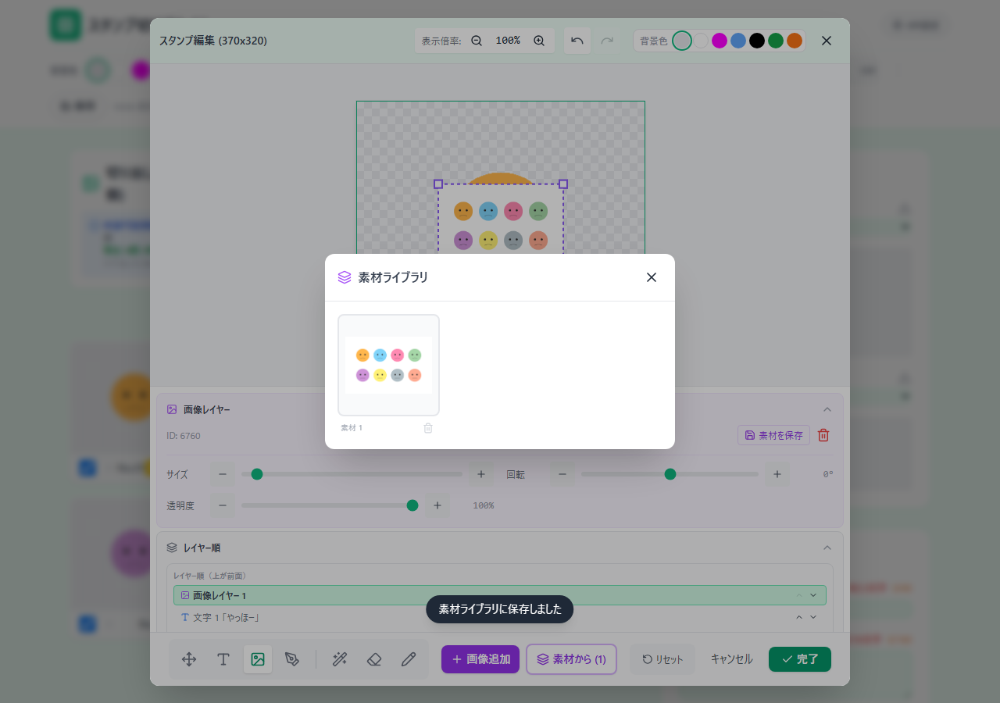
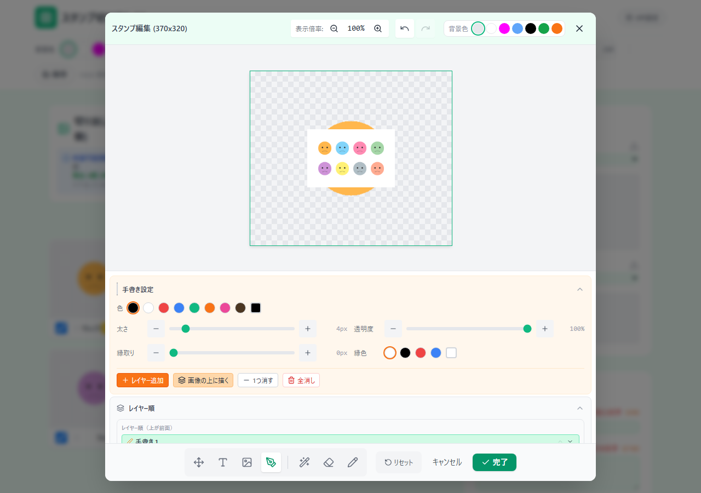
マウス・指でスタンプに直接描き込めます。色・太さ・透明度・縁取り色を設定でき、「画像の上/下に描く」の切り替え、「レイヤー追加」で描画レイヤーを複数持てます。「1つ消す」「全消し」で描いた線を取り消せます。
文字・画像レイヤー・手書きを1つでも追加すると、編集パネルの下に「レイヤー順（上が前面）」が自動的に表示されます（上のスクリーンショットにも写っています）。各項目の↑↓ボタンで「1つ前面へ／1つ背面へ」と重なり順を調整できます。文字を画像の後ろに隠したい、などのときに使います。
背景色（プレビュー用）：編集画面上部の「背景色」は、透明・白・マゼンタ・青・黒・緑・オレンジからキャンバスの見え方を切り替えられます。あくまで確認用の表示で、実際のスタンプ画像には反映されません。
編集画面上部のツールバーから、全スタンプにまとめて処理を適用
一覧画面全体のプレビュー背景色を切り替えます。透過の抜け漏れチェックに便利です。
言葉と絵が離れて切り出された、逆にくっついて1つになってしまった、というときに、全スタンプまとめて「まとめる強さ」を調整します。
全スタンプの背景をまとめて透過処理します。個別編集の後に使うと個別編集がリセットされるため、個別編集の前に済ませておくのがコツです。
一覧に並ぶスタンプのサムネイル表示サイズを変更します（見た目だけの調整で、画像自体は変わりません）。
複数のテキストを一括で各スタンプに割り当てます。プリセット（日常・感情・返事）から定型文を呼び出すことも可能。フォント・色・サイズ・位置（上/中/下、縦書き時は左/中/右）・縁取りも一括設定できます。
「テキスト一括追加」で入れた文字をまとめて削除します（個別に文字入れした分は対象外）。
基準にするスタンプを選ぶと、全スタンプの画像サイズをそろえられます。
全スタンプの画像位置をキャンバス中央にまとめてリセットします。
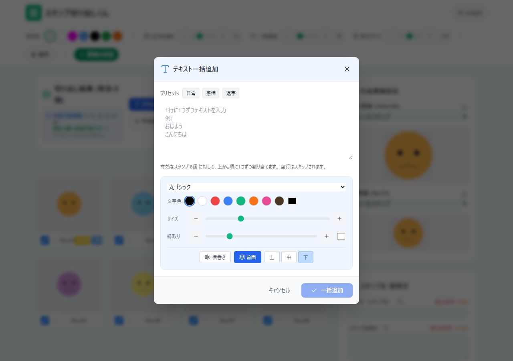
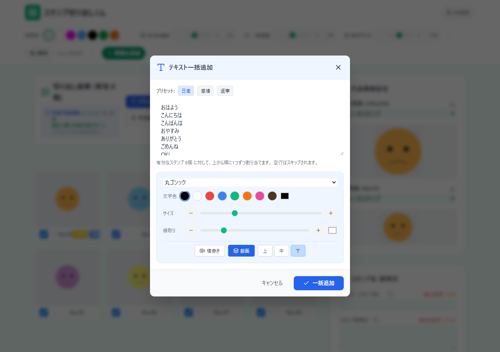
並べ替え・除外・削除・ダウンロードと、メイン/タブ画像の設定
スタンプ一覧をドラッグ&ドロップして順番を自由に変更できます。申請時の並び順にも反映されます。
カード左下のチェックを外すと、そのスタンプを「除外」（一時的に無効化）できます。個数を8/16/24/32/40に合わせたい時に便利です。削除はされません。
カード左下の✕ボタンで、そのスタンプを完全に削除します（除外と違い元に戻せません）。
カードにカーソルを乗せると表示される、はさみアイコンから切り出し範囲をやり直せます。
カードにカーソルを乗せると表示される、ダウンロードアイコンでそのスタンプだけPNG保存できます。
下記の代表画像設定で選んだスタンプには、カード上に黄色「MAIN」・青「TAB」のバッジが表示されます。
申請には、スタンプ一覧とは別に「メイン画像」「タブ画像」の登録が必要です。編集画面右側の「代表画像設定」で、元にするスタンプをプルダウンから選びます。選んだプレビューをクリックすると、そのメイン/タブ画像専用の編集画面（③のツールと同じもの）が開き、個別に調整できます。
| 種類 | サイズ | 用途 |
|---|---|---|
| メイン画像 | 240 × 240 px | スタンプショップ一覧でのサムネイル |
| タブ画像 | 96 × 74 px | トーク画面のスタンプタブアイコン |
申請に必要なタイトルと説明を日本語・英語で入力
日本語で2文字以上40文字以内。
日本語で10文字以上160文字以内。どんなシーンで使えるか、どんなキャラかを書きましょう。「説明文ヒント」を開くと入力例が見られます。
Gemini APIキーが設定されていれば、ボタン1つで英語タイトル・英語説明文を自動生成できます。未設定の場合はAPIキー設定を促すメッセージが表示されます。もちろん英語欄に直接手入力してもかまいません。
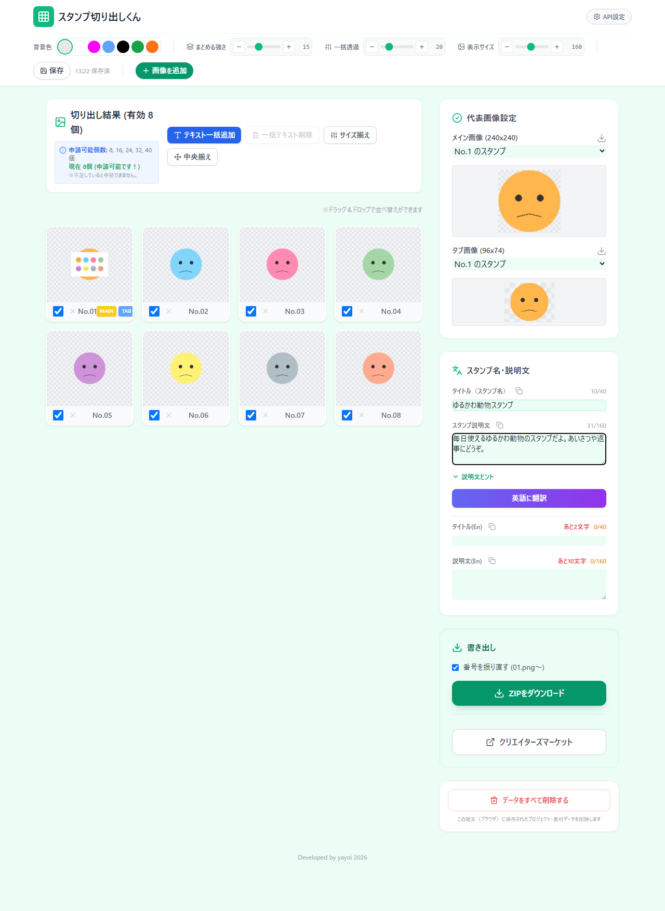
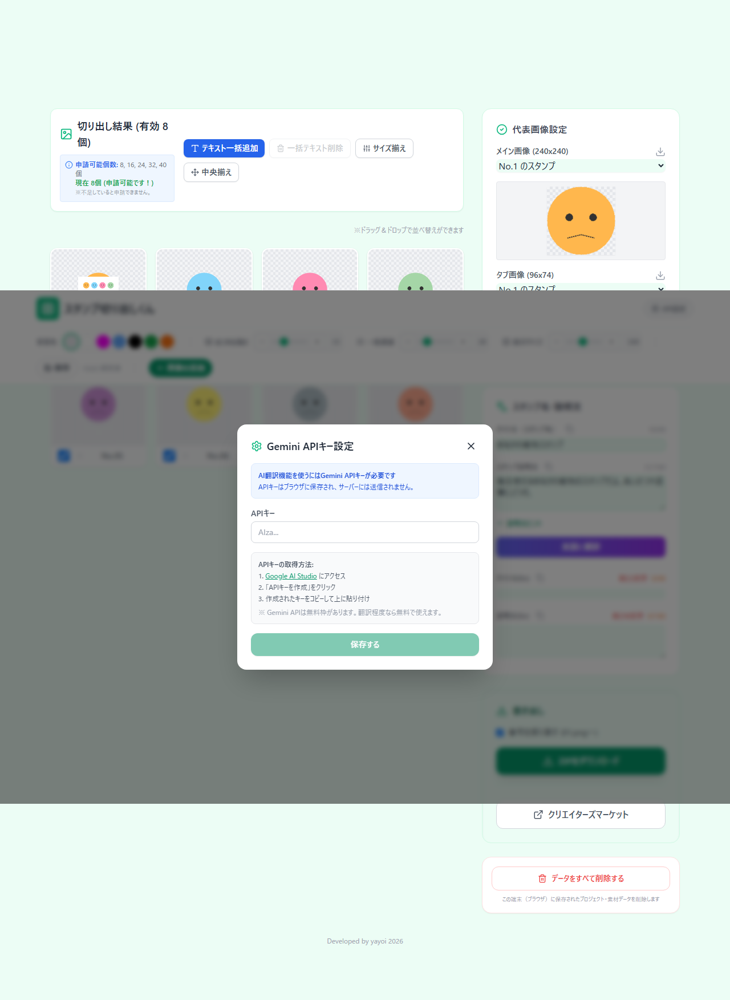
説明文ヒント：「○○のスタンプ。毎日よく使う言葉がたくさん。バレンタインに使える。」のように使用シーン・特徴・ターゲットを盛り込むと検索に引っかかりやすくなります。
申請用ファイルをまとめてダウンロード
| オプション | 内容 |
|---|---|
| 番号を振り直す | ファイル名を 01.png〜 の連番に整えます。申請時に必要な形式に合わせられます（チェックはデフォルトON）。 |
| ZIPをダウンロード | スタンプ画像・メイン画像・タブ画像が入ったZIPを一括ダウンロードします。クリエイターズマーケット申請にそのまま使えます。 |
| 個別ダウンロード | スタンプカードやメイン/タブ画像枠のダウンロードアイコンから、1枚ずつPNG保存できます。 |
ダウンロードしたZIPはそのまま次回の「ZIPから復元」にも使えます。バックアップとして保管しておくと便利です。文字入れ・レイヤーなどの編集内容もZIPに保存されます。
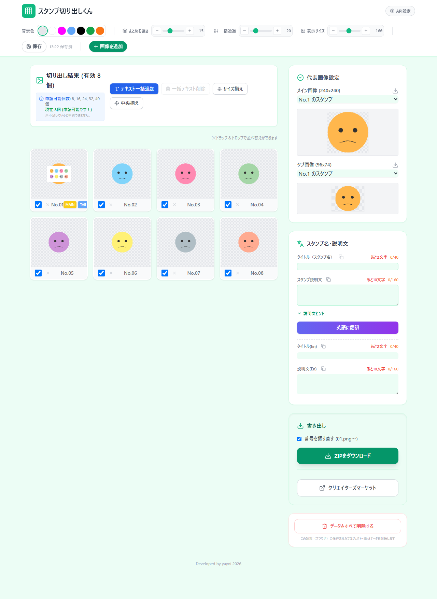
この端末に保存された作業データを消去する
編集画面右下の「データをすべて削除する」を押すと、確認画面が表示されます。この操作は取り消せません。「APIキー設定も削除する」にチェックを入れると、登録したGemini APIキーも一緒に消去されます。
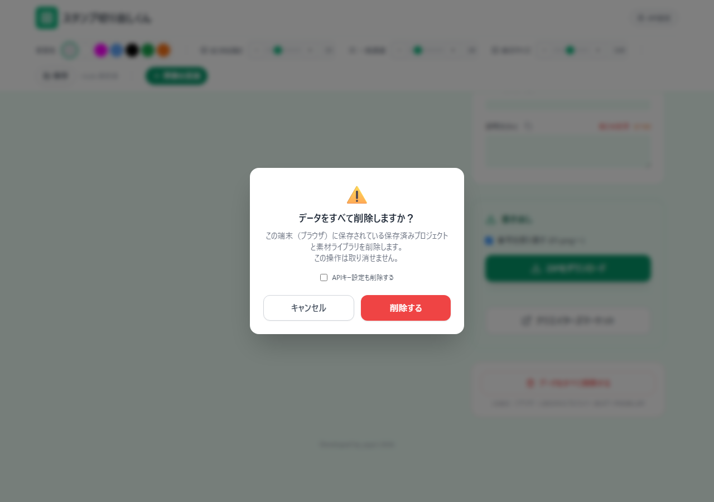
削除すると保存済みプロジェクトと素材ライブラリが完全に消えます。作業内容が必要な場合は、先に「ZIPをダウンロード」でバックアップを取ってから削除してください。
販売・有料スタンプを申請する公式ルート（PCブラウザ）
LINEクリエイターズマーケットはスタンプを有料販売できる公式プラットフォームです。審査があり、結果が出るまで数日かかることがあります。
編集画面の「クリエイターズマーケット」ボタン、またはcreator.line.me にアクセスし、LINEアカウントでログインします。
ダッシュボードの「アイテム管理」から「新規追加」を選択し、アイテムタイプで「スタンプ」を選びます。
タイトルと説明文を日本語・英語の両方で入力します。スタンプ切り出しくんで生成した英語テキストをそのまま貼り付けられます。
ZIPを解凍してスタンプ画像（370×320px以内、PNG形式）をアップロードします。8・16・24・32・40枚のいずれかが必要です。
メイン画像（240×240px）とタブ画像（96×74px）をそれぞれアップロードします。ZIPに同梱されています。
販売価格（120円〜）と販売エリアを選択します。初めての方は「日本のみ」から始めるのがおすすめです。
内容を確認して申請します。審査を通過すると販売開始になります。結果はメールで通知されます。
審査のポイント：著作権・商標権を侵害しないこと、公序良俗に反しないこと、LINEガイドラインを遵守していることが審査基準です。キャラクターの二次創作には制限があります。
スマホアプリで登録する公式ルート
LINEスタンプメーカーはスマートフォンアプリ（iOS/Android）です。個人利用向けの「自分専用」スタンプも、審査を経た「販売申請」もこのアプリから行えます。
App StoreまたはGoogle Playで「LINEスタンプメーカー」を検索してインストールし、LINEアカウントでログインします。
スタンプ切り出しくんでダウンロードしたPNG画像をスマホに転送し、アプリの「カメラロールから選択」でインポートします。
「＋新規スタンプセットを作成」から、スタンプ名と画像を登録します。8枚以上のスタンプが必要です。
スタンプセット一覧画面から「メイン画像」「タブ画像」をそれぞれ設定します（スタンプ切り出しくんのZIPに同梱）。
自分のLINEで使う場合は「自分専用」、一般販売する場合は「販売申請」を選択します。
いずれの申請タイプもLINEの審査があります。審査通過後に利用・販売が開始されます。